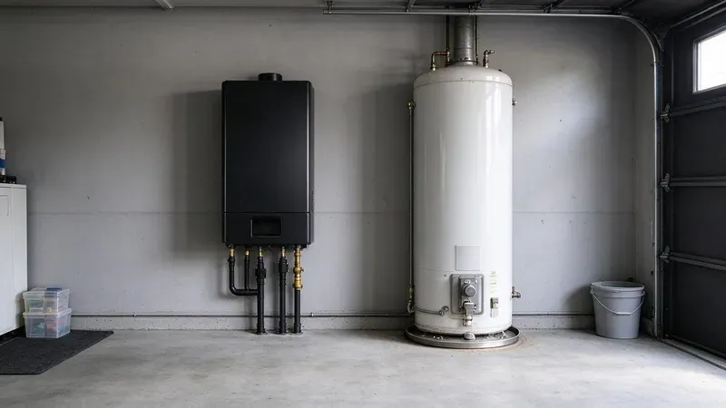

When a water heater fails, most New York homeowners face the same question. Should you replace it with another tank or switch to tankless? National buying guides rarely account for local conditions. Incoming water temperature, how hot or cold the garage gets, and how much mineral content is in the water all shift the decision in ways worth understanding before you buy.
Humid summers bring condensation on cold pipes and toilet tanks, which can drip onto ceilings and floors below.
How Each Type Works
A traditional tank heater stores 40 to 75 gallons of water and keeps it hot around the clock with a gas burner or electric elements. It is simple, familiar and fairly inexpensive to install. The tradeoff is standby loss, the energy used to reheat stored water that is sitting unused, and a limited supply. Once the tank is drained by back-to-back showers, you wait while it recovers.
A tankless heater heats water only when a fixture calls for it. Water flows through a heat exchanger, a flow sensor fires the burner, and hot water comes out as long as the tap is open. Capacity is rated in gallons per minute at a given temperature rise rather than tank size. Most whole-home units are gas-fired, since electric tankless models for a full house often require more amperage than an ordinary panel can spare.
How Local Conditions Change the Math
Tankless capacity depends on how much the heater has to raise the water temperature. In warm climates, cold water entering the house during summer is already quite warm, and even in winter it stays milder than in northern areas. A smaller temperature rise means a tankless unit can deliver a higher flow rate, so one unit can comfortably serve more fixtures at once. Where incoming water is cold for much of the year, proper sizing becomes even more important.
Garage temperature matters too. A tank heater sitting in a very hot garage loses less heat to standby, which narrows the efficiency advantage of tankless during summer. On the other hand, those same conditions make hybrid heat pump water heaters work extremely well, since they pull heat from warm surrounding air and can cool the garage slightly as a bonus. In a cold basement or garage, a heat pump unit works harder, so placement deserves a careful look.
Hard water is one of the biggest concerns in many areas. Scale builds quickly on tankless heat exchangers, and most manufacturers require annual descaling to keep the warranty valid. Tank heaters suffer too, with sediment buildup cutting short their life. Either way, a water softener or scale inhibitor ahead of the heater pays dividends where the water is hard.
Water hardness in New York varies a lot, with many surface water supplies running soft and groundwater in some areas running hard.
Comparing the Costs
Prices vary with fuel type, venting and code upgrades, but these ranges are common for installed equipment:
- Standard gas or electric tank, 40 to 50 gallons: about $1,400 to $2,800 installed.
- Gas tankless, whole home: about $3,000 to $6,000 installed, higher if the gas line must be enlarged.
- Hybrid heat pump tank: about $2,800 to $5,000 installed, sometimes offset by utility rebates or federal tax credits.
- Annual tankless descaling: about $150 to $300 if done by a plumber.
- Tank flush: about $100 to $200, recommended once a year in hard water areas.
The hidden cost with tankless is frequently the gas line. A whole-home unit can draw 180,000 BTU or more, and many existing lines sized for a 40,000 BTU tank are too small. Converting from a tank to tankless also usually means new stainless or PVC venting, a condensate drain for condensing models, and an electrical outlet for the control board.
Which One Should You Choose?
A tank heater still makes sense for budget-focused replacements, rental properties and homes where the existing gas line and venting are not set up for tankless. Tankless is a strong fit for larger families who run out of hot water, homeowners planning to stay long term, and anyone who wants to free up garage space. A hybrid heat pump is worth careful consideration for electric homes with a garage install, especially where the garage stays warm for much of the year. Expect a quality tank to last 8 to 12 years in hard water and a well-maintained tankless unit to last 15 to 20.
When to Call a Professional
Water heater installation involves gas piping, venting, combustion air, expansion tanks and temperature and pressure relief lines, all of which have to meet code. HCL Plumbing sizes tank, tankless and hybrid heaters based on your fixture count and incoming water temperature, checks gas line capacity, and handles permits where required. Call (716) 396-7101 for an straightforward comparison and an upfront quote on the right heater for your home.
Need a licensed plumber in New York?
HCL Plumbing answers 24/7 and offers same-day service across New York.